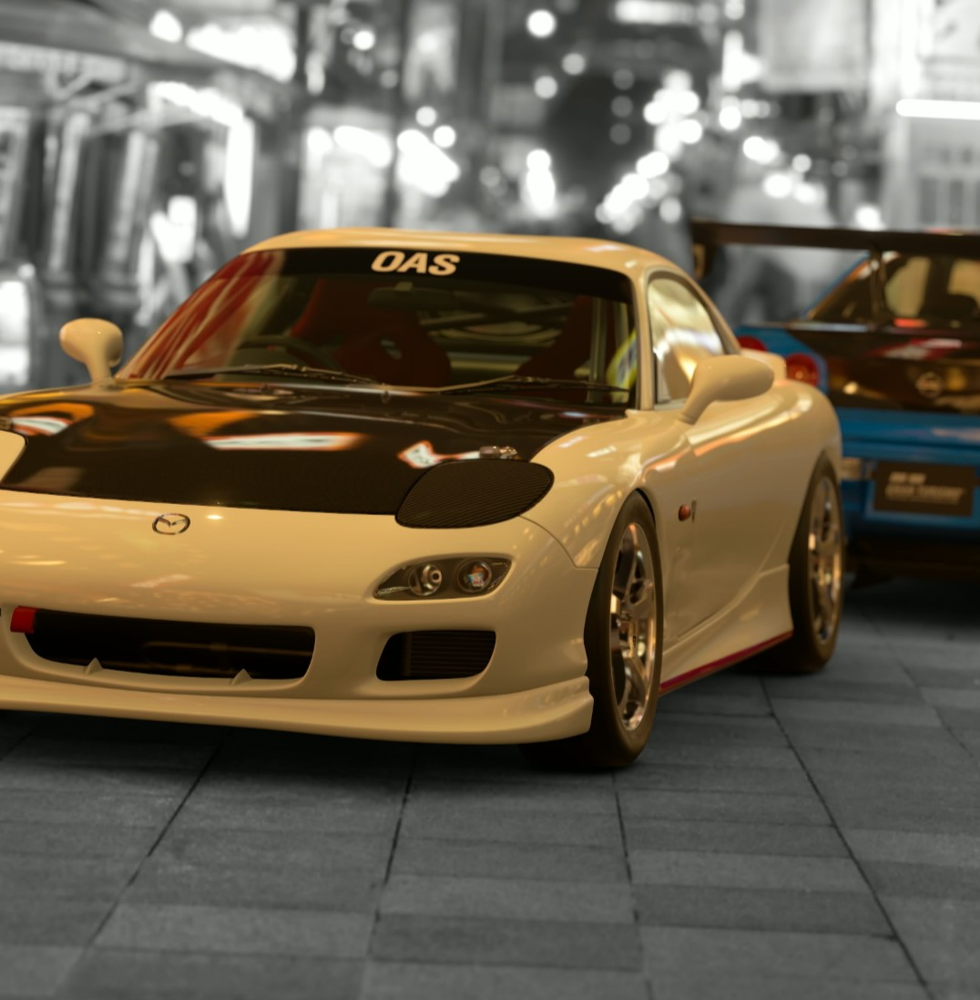

はしる Nür-Arts エース
好きなクルマ SKYLINE GT-Rシリーズ（特にR34）、RX-7（FD3S）
目指すトップ Formula1ワールドチャンピオン
一言 スピードのトリコになった男です
愛車はMAZDA RX-7(FD3S) TypeRS
ハチロク二キ Nür-Arts No.2
好きなクルマ GazooRacingのクルマ（特にGR86）
目指すトップ SuperGT DensoKobelcoSard エースドライバー
一言 行き詰まっても、はしることは、絶対に、やめません
愛車はTOYOTA GR86(ZN8)

りっつ Nür-Arts ドライバー
好きなクルマ BRZ(ZD8)、HUMMER H2
目指すトップ SUBARU BRZ R&D Sportのドライバー
一言 BRZはいいぞ～
愛車はSUBARU BRZ(ZD8)

いけ Nür-Arts ドライバー
好きなクルマ 三菱ランサーエボリューションシリーズ（特にエボ4）
目指すトップ 志望校合格
一言 うどんなんてアウトオブ眼中
愛車はMITSUBISHI LancerEvolution 4